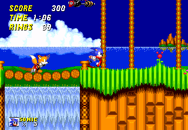
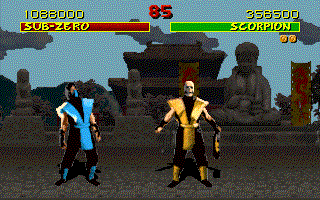
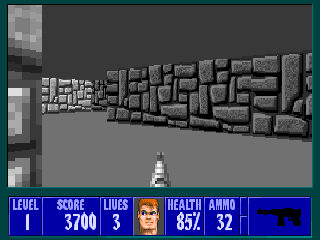
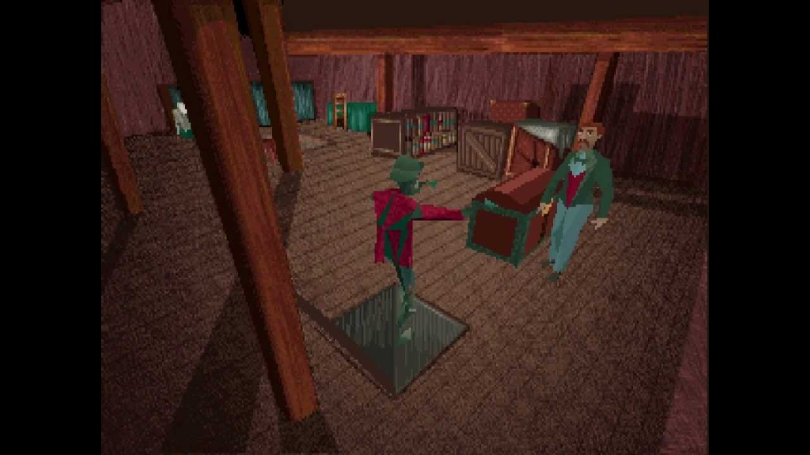

>
Aparece la segunda parte de Sonic, con novedades como la aparición de un nuevo personaje llamado Tails, que se trataba de un zorro con dos colas que tenía la habilidad de volar. Se daba la posibilidad de jugar con Tails y Sonic a la vez,
en pantalla partida. En el caso de que solo hubiera un jugador, Tails sería
controlado por la CPU. El juego era aun más rápido, había más enemigos y era más largo.
El juego se lanzó para Mega Drive, Game Gear y Master System. Tuvo tanto éxito que se convirtió en el juego más vendido de la 16 bits de SEGA.
<

>
Sale a la venta Mortal Kombat. Tras el éxito de Street Fighter II el mercado se llenó de videojuegos de lucha. Entre toda esta gran cantidad de juegos apareció Midway con su Mortal Kombat, una muy buena alternativa. El juego constaba de siete luchadores y nuestra misión era conseguir ser el campeón del torneo Mortal Kombat.
Había una gran variedad de golpes y el juego era tremendamente violento, pudiendo realizar un "fatality" (para matar al rival).
Este juego fue muy criticado por su violencia y en algunos sitios se llegó a prohibir. Pero esto en lugar de afectarlo negativamente, lo que hizo es que aumentaran sus ventas y popularidad.
<

>
Se crea Wolfenstein 3D. No se puede decir que fuera el primer juego que probaba con la perspectiva tridimensional, pero sí que fue el primero que supo aprovecharla para obtener éxito. Representamos a J. Blazkowicz, un espía que es capturado por los nazis y encerrado en un castillo.
Nuestra misión será escapar. Fue totalmente revolucionario y supuso un salto de calidad de los ordenadores sobre las consolas.
<

>
Pese a que en la década anterior hubo juegos que se acercaron a la estética de
los Survival Horror (Haunted House), no fue hasta la llegada de Alone in the Dark cuando tomaron la forma que les caracteriza en la actualidad. En el juego encarnábamos a Edward Camby, un detective que es contratado para realizar un inventario de los objetos que se encuentran en la mansión de Derceto, cuyo dueño se ha suicidado hace poco. La mansión resulta estar llena de zombies y criaturas horrorosas, por lo que el objetivo pasa por sobrevivir y huir de la mansión.
Fue uno de los primeros juegos en utilizar un entorno 3D tal y como lo conocemos
a día de hoy. Gráficamente era una maravilla en la época y la duración del juego
era bastante larga.
<